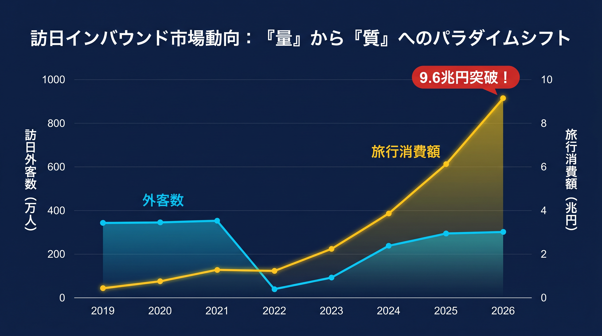
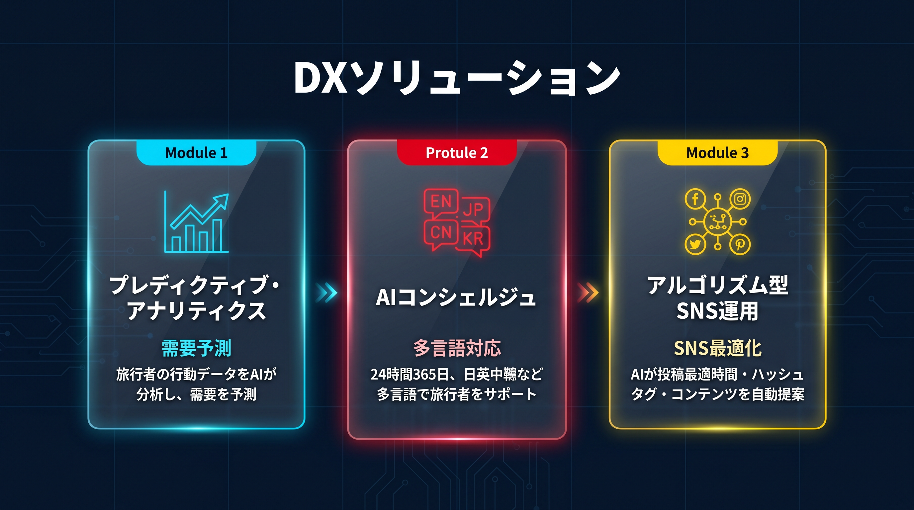

2025年の大阪・関西万博による熱狂を経て、日本のインバウンド市場は大きな転換点を迎えました。2026年現在、観光事業者に求められているのは、単なる「集客」ではなく、テクノロジーを活用した「高単価・高効率なマーケティング」へのシフトです。
本記事では、新時代のインバウンド戦略をPROTECH独自のデータ視点で解説します。
目次
1. 2026年のインバウンド市場：「集客数」から「消費単価」へのパラダイムシフト
2026年現在、日本のインバウンド市場は一種の「成熟期」に突入しています。訪日外国人客数は約4,140万人と安定した推移を見せる一方で、注目すべきは観光消費額が9.6兆円を突破し、過去最高を更新し続けているという事実です。

※イメージ：2026年に向けた訪日客数と消費額の推移
これは何を意味するのでしょうか？それは、インバウンドビジネスの成功指標が「いかに多くの人を呼ぶか（量）」から「いかに一人あたり消費額（LTV）を高めるか（質）」へ完全にシフトしたということです。
背景には、一部の人気観光地で深刻化したオーバーツーリズム（観光公害）への対策意識の高まりがあります。また、訪日回数が多いリピーター層が増加し、彼らはもはや有名な観光地を巡るだけでなく、地方への分散や、自分だけの「本物の体験」に惜しみなくお金を使うようになっています。
2. 主要国別のリアルなマーケティング戦略
ターゲットとする国や地域によって、刺さるアプローチは全く異なります。「とりあえず多言語サイトを作ればいい」という時代は終わりました。
🇨🇳 中国市場：小紅書（RED）とAIを活用した「先回り」の提案
中国からの訪日客は、かつての爆買いツアー（団体旅行）から完全な個人旅行（FIT）へと移行しました。旅の計画は、中国版Instagramとも呼ばれる「小紅書（RED）」での検索から始まります。
ここで重要なのは、単なる綺麗な写真の投稿ではありません。ユーザーが「日本でどんな悩みを持ち、何を検索するか」をAIで分析し、その答えとなるようなコンテンツを先回りして発信することです。最新のアルゴリズムを味方につけ、自然な口コミ（UGC）を発生させる仕組み作りが求められます。
🇹🇼 🇭🇰 台湾・香港市場：リピーターを唸らせる「地方深掘り」
日本への渡航経験が非常に豊富なこのエリアの旅行者には、定番の観光スポットはすでに響きません。彼らが求めているのは、まだ知られていない地方の「食」や「ニッチな文化」です。
SNS広告を運用する際も、クリエイティブのA/Bテストを徹底し、データを元にLP（ランディングページ）を細かく最適化していく地道な検証が、成約率に直結します。
🇺🇸 🇦🇺 欧米豪市場：サステナブルとアドベンチャー
滞在期間が長く、消費単価が最も高いのが欧米豪の旅行者です。彼らにとって旅行は単なるレジャーではなく、自己成長や環境への配慮と結びついています。
「持続可能性（Sustainable）」にどう貢献しているのか、その地域ならではのストーリーテリングをGoogle検索（SEO）やViatorなどの欧米向けOTAでしっかりと発信していくことが重要です。
3. PROTECHが提案する「次世代インバウンドDX」の3つの柱
このような複雑化する市場において、経験や勘だけで勝負するのはリスクが高すぎます。PROTECH（プロテック＝Professional × Technology）では、以下の3つの基幹ソリューションで観光事業者のDX・インバウンド集客支援を行っています。

※PROTECHが提供するDXソリューションの全体像
① プレディクティブ・アナリティクス（需要予測AI）
過去のデータやトレンドから、訪日客の動線や需要をAIが予測します。これにより、無駄な在庫を抱えるリスクを減らし、機会損失を最小限に抑えることが可能です。
② マルチリンガル・AIコンシェルジュ
最新のLLM（大規模言語モデル）を組み込んだAIチャットボットが、24時間・多言語で顧客の問い合わせに対応します。言語の壁による予約の取りこぼしを防ぎ、コンバージョン率（CVR）を劇的に引き上げます。
③ アルゴリズム型SNS最適化
「いつ、どんな内容を投稿すれば最も見られるのか」をデータに基づいて自動で最適化。限られた予算とリソースで、ターゲットへのリーチを最大化します。
4. 【成功事例】データ分析で利益を30%引き上げた地方旅館のリアル
実際にテクノロジーを導入して結果を出した事例をご紹介します。
【課題】
ある地方の高級旅館では、これまで「なんとなく良さそう」という感覚でSNS広告を出稿していました。アクセス数はそこそこ集まるものの、実際の宿泊予約にはなかなか結びついていないという課題を抱えていました。
そこで、PROTECHのデータ分析チームが介入し、サイト内のユーザー行動（ヒートマップ）を解析。結果、多くの外国人ユーザーが「予約フォームの入力」と「決済手段の制限」で離脱していることが判明しました。
すぐさま予約フォームをAI自動翻訳に対応させ、AlipayやApple Payなどの多様な決済手段を導入。さらに、広告ターゲットをデータに基づいて絞り込みました。
💡 結果と成果
広告費を20%削減したにもかかわらず、直接予約数は前年比1.5倍に増加。純利益ベースで30%の向上を実現しました。
5. まとめ：2026年、勝ち残るために今すべきこと
インバウンド集客は、もはや「運」や「感性」に頼るフェーズを過ぎました。2026年における真の勝者は、「誰が、いつ、どこで、なぜ自社のサービスにお金を払うのか」をデータで解明し、適切にテクノロジーを実装できた企業です。
私たちPROTECHは、最先端のAI・データ分析技術と、インバウンド市場の深い専門知識を掛け合わせ、貴社のビジネスを次のステージへと引き上げます。「現状の集客に限界を感じている」「テクノロジーをどう活用すべきかわからない」という方は、ぜひ一度ご相談ください。
データに基づいたインバウンド対策を始めませんか？
貴社に最適なインバウンドDX戦略を無料で診断いたします。小紅書（RED）運用やデータ分析など、何から始めるべきかお悩みの方はお気軽にお問い合わせください。
無料相談・お問い合わせ